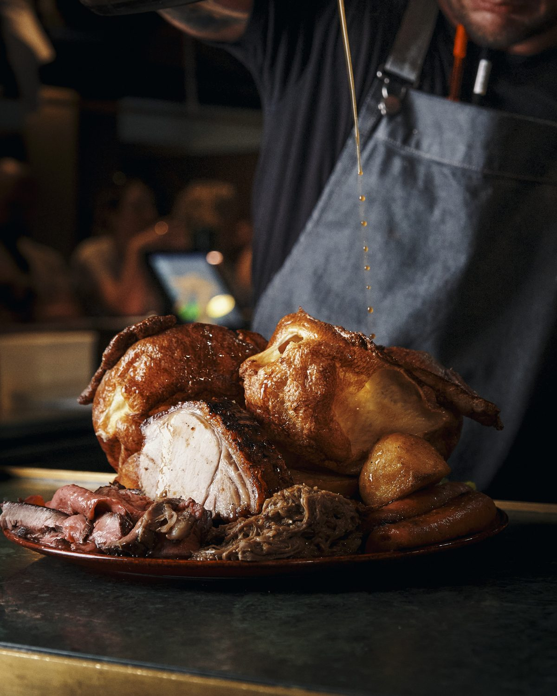
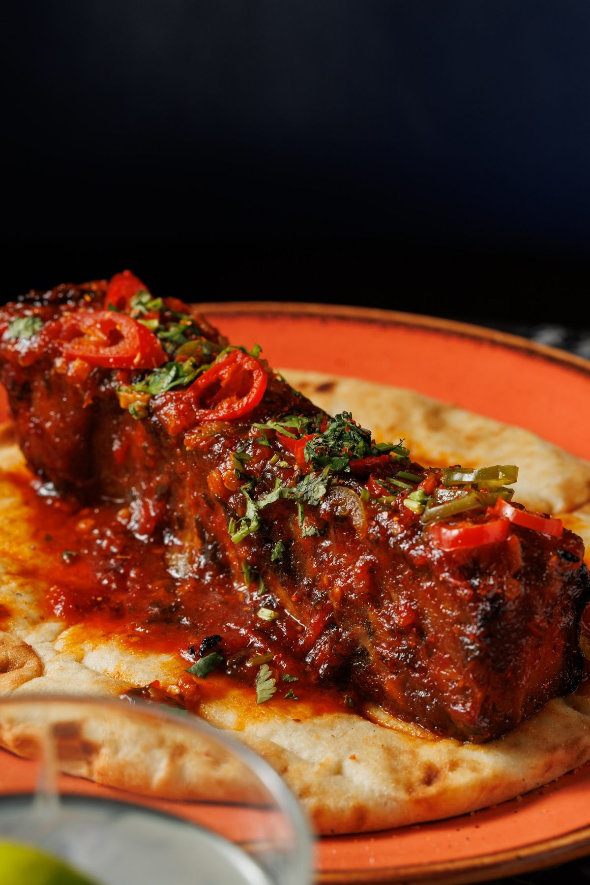

Rare-breed beef. Butchered in-house. Cooked over flames you can hear from across the room.


The best Sunday roast in London — fire-cooked beef, pork loin or smoked lamb shoulder, crispy beef-fat potatoes, giant Yorkshires, honey-glazed carrots and a 16-hour gravy worth waiting for.
Brunch with attitude, built for long lunches, loud laughs and proper catch-ups. Handmade tacos, 28-day dry-aged steak, triple smashed cheeseburgers, the temper Benedict — paired with ninety minutes of free-flowing drinks and a DJ on the decks.

We buy from one farmer — Charles Ashbridge in North Yorkshire — and we butcher and age every cut in-house. Since 2016 we've been known for rare-breed beef, bold flavours and live-fire cooking. It's all f##ing delicious.




The cheeseburger taco. The short-rib & bone marrow. The smoked cod cheek with pickled pineapple. The cult classics, two per serving.
★ 4.6 Google · ★ 4.7 OpenTable · Top 100 OpenTable 2026
"Best steak I've ever had. The bone-marrow butter is unreal. Worth every penny."
"Hands-down the best Sunday roast in London. The Yorkshire is the size of a small dog."
"Bottomless brunch done properly. Not cheap prosecco. Actually good drinks and brilliant food."
Same fire philosophy, two different moods. Both a short walk from a Tube.
25 Broadwick Street, W1F 0DF
Carnaby St · Oxford Circus · Piccadilly
2 Angel Court, 30 Throgmorton Street, EC2R 7HJ
Bank · Moorgate · Liverpool Street
£50, £100, £150, £250 — or any amount from £25. Delivered instantly by email. Redeemable across food, drink, brunch and roast at both locations. No expiry for 12 months.
Buy a gift cardPrivate dining rooms, full venue takeovers, corporate catering. Soho up to 190 guests · City buy-out up to 240. Feast menus from £65pp. Plus cocktail masterclasses through temper to you.
events@temperrestaurant.comConfirmed in seconds. Free to cancel. Parties of 8 or fewer via OpenTable; 9+ via DesignMyNight.
Parties of 9+ · Soho · City · Bar-B-Q & Crabshack · Opening list